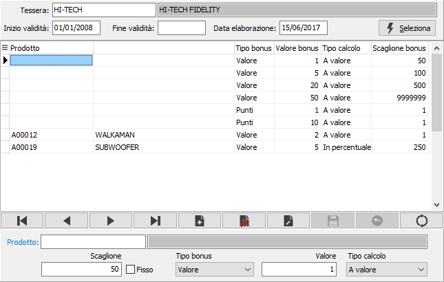

Definizione bonus
La procedura consente di visualizzare ed inserire in modo semplificato i bonus relativi alle tessere fedeltà.

TESSERA: inserire il codice della tessera per cui si devono inserire i bonus, vengono visualizzate le date di inizio e fine validità della tessera. Sul campo sono attive le funzioni di ricerca (F9) sulla tabella stessa.
INIZIO VALIDITÀ: indicare la data di inizio validità dei bonus che si devono inserire.
FINE VALIDITÀ: indicare la data di fine validità dei bonus che si devono inserire.
DATA ELABORAZIONE: inserire la data in cui si intende eseguire la definizione dei bonus.
La pressione del pulsante Seleziona riporta nella griglia i bonus eventualmente già attivi nei limiti inseriti e consente di inserire altri dati. Per il significato dei campi si rimanda al capitolo relativo alle tessere fedeltà.